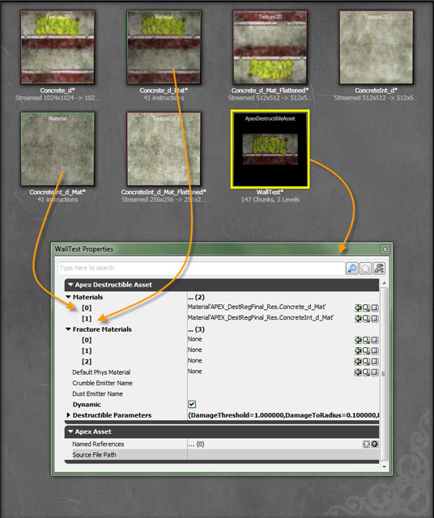
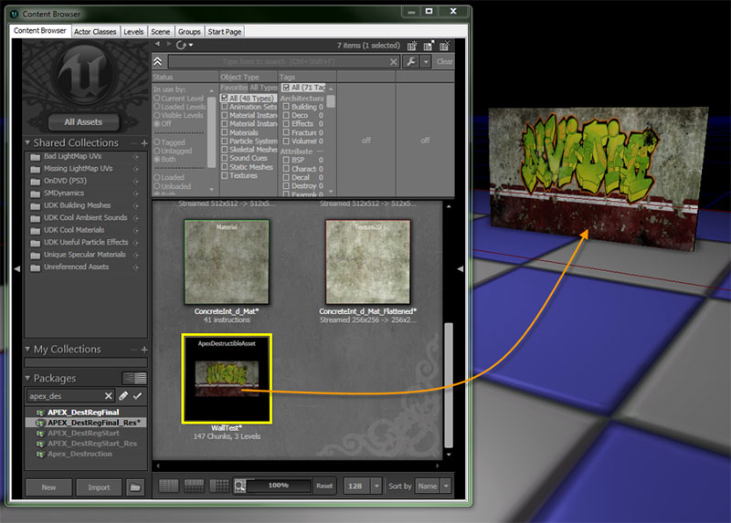

UDN
Search public documentation:
APEXDestructionJP
English Translation
中国翻译
한국어
Interested in the Unreal Engine?
Visit the Unreal Technology site.
Looking for jobs and company info?
Check out the Epic games site.
Questions about support via UDN?
Contact the UDN Staff
中国翻译
한국어
Interested in the Unreal Engine?
Visit the Unreal Technology site.
Looking for jobs and company info?
Check out the Epic games site.
Questions about support via UDN?
Contact the UDN Staff
UE3 ホーム > APEX フレームワーク > UE3 における APEX Destruction (破壊表現)
UE3 ホーム > レベルデザイナー > UE3 における APEX Destruction (破壊表現)
UE3 ホーム > レベルデザイナー > UE3 における APEX Destruction (破壊表現)
UE3 における APEX Destruction (破壊表現)
概要
ツールの取得
チュートリアル
APEX Destruction を UE3 にインポート
- マテリアル エディタ において、*Used With APEXMeshes? を使用してマテリアルを作成します。* フラグのセット

- PhysXLab で作成した .apx ファイルをインポートします。
- Apex Destructible Asset のプロパティを開き、破砕メッシュに使用できるよう、 [Materials] (マテリアル) を UE3 マテリアルに設定します。画像では、外部マテリアルが slot 0 に、内部マテリアルが slot 1 に割り当てられていることが分かります。

特定のレベルにおける APEX Destructible Actor の作成
- 汎用ブラウザで Apex Destructible Asset を選択し、レベルエディタにおけるアクタの配置先を右クリックします。
- 該当するレベルで必要な分だけ、アクタのスケーリングを行います。

Apex Destructible Asset のプロパティ
- Materials - Materials には、当該アセットに関連づけて再マッピングすることができるマテリアルの配列が含まれています。
- FractureMaterials - 各破砕レベルのための Fracture (破砕) エフェクトです。
- DefaultPhysMaterial - 当該アセットのために使用するデフォルトの物理マテリアルです。アクタの物理マテリアルがメッシュコンポーネントで定義されている場合は、それが代わりに使用されることになります。
- CrumbleEmitterName - クランブル (粉々にすること) のために使用する NxMeshParticleSystem の名前です。(指定されている場合) NxDestructibleAsset の中で定義されているクランブル システムがオーバーライドされます。
- DustEmitterName - フラクチャライン ダスト (fracture-line dust) のために使用される NxMeshParticleSystem の名前です。(指定されている場合) NxDestructibleAsset の中で定義されているダストシステムがオーバーライドされます。
- DestructibleParameters - 破壊 (destruction) プロパティを制御するパラメータです。Destructible (被破壊性) パラメータには、詳細な設定項目が含まれています。その内訳は、衝撃を受けたときの被破壊性の挙動の仕方、削除されるまで残がいが達することができる距離、削除されるまで残がいが残る時間です。
- DamageParameters - チャンク (chunk) ダメージに関連するパラメータです。
- DamageThreshold - チャンクの (被破壊性から放たれる) 破砕 を引き起こすダメージ量です。これは、 NxDestructibleActor::applyDamage または NxDestructibleActor::applyRadiusDamage に渡されるダメージ (damage) 値、または、衝撃 (impact) から取得されます。(forceToDamage を参照してください)。
- DamageSpread - ダメージが伝わる被破壊性への距離を制御します。チャンクに適用されるダメージに DamageSpread を乗じることによって、ダメージ伝播距離を取得します。半径 (範囲) 内にあるすべてのチャンクが、ダメージを受けることになります。各チャンクに適用されるダメージの大きさは、ダメージが適用された位置に応じて異なります。フルダメージが適用されるのは、距離ゼロの地点にある場合です。ゼロダメージは、ダメージ半径にある場合です。
- ImpactDamage - NX_DESTRUCTIBLE_TAKE_IMPACT_DAMAGE がセットされている深度に、チャンクが位置している場合 (DepthParameters 参照)、チャンクが NxScene でコリンジョンをもっている時に、衝撃力 (impact force) で乗じた ImpactDamage と等しいダメージを受けます。デフォルト値はゼロです。(ゼロにすることによって、衝撃ダメージを効率的に無効にできます)。
- ImpactResistance - 物理的な接触 (DepthParameters 参照) によってチャンクが衝撃ダメージを受ける場合、このパラメータは、接触によって生成される衝撃の最大値を表します。弱い材質 (例 : ガラス) は、この値を低くセットすることによって、フラクチャ中に重いオブジェクトを通過させるようにすることができます。注意 : このパラメータを 0 にセットすると、衝撃の上限がなくなります。すなわち、ゼロは無限と解釈されます。デフォルト値は、0.0f です。
- DefaultImpactDamageDepth - デフォルトでは、この階層までにしか衝撃ダメージが適用されません。特定の深度については、DepthParameters でこのデフォルト値をオーバーライドすることができます。マイナスの値の場合は、衝撃ダメージが無効になります。
- DebrisParameters - チャンクの残骸 (debris) レベルの設定に関連するパラメータです。
- DebrisLifetimeMin - 残骸チャンク (debris chunk) (debrisDepth 参照) が、非残骸チャンク (non-debris chunk) から切り離されて、一定の時間 (単位 : 秒) 後に破棄されます。実際のライフタイムは、2 つの値の間で補間されます (モジュールの LOD 設定項目に基づく)。ライフタイムを無効にするには、フラグフィールドで、NX_DESTRUCTIBLE_DEBRIS_TIMEOUT をクリアします。 debrisLifetimeMax < debrisLifetimeMin の場合は、2 つの値の平均値が両方に使用されます。それぞれのデフォルト値は次のようになっています。 debrisLifetimeMin = 1.0 、 debrisLifetimeMax = 10.0f
- DebrisLifetimeMax -
- DebrisMaxSeparationMin - 残骸チャンク (debris chunk) (debrisDepth 参照) が、maxSeparation よりも大きな距離だけ原点から切り離された場合に破棄されます。実際の maxSeparation は、2 つの値の間で補間されます(モジュールの LOD 設定項目に基づく)。maxSeparation を無効にするには、フラグフィールドで、NX_DESTRUCTIBLE_DEBRIS_MAX_SEPARATION をクリアします。 debrisMaxSeparationMax < debrisMaxSeparationMin の場合は、2 つの値の平均値が両方に使用されます。それぞれのデフォルト値は次のようになっています。debrisMaxSeparationMin = 1.0 、 debrisMaxSeparationMax = 10.0f
- DebrisMaxSeparationMax -
- ValidBounds - maxSeparation に元の被破壊性アセットのサイズを乗じた値よりも大きな距離だけ、残骸チャンク (debris chunk) (debrisDepth 参照) が原点から乖離した場合に破棄されます。実際の maxSeparation は、2 つの値の間で補間されます(モジュールの LOD 設定項目に基づく)。maxSeparation を無効にするには、フラグフィールドで、NX_DESTRUCTIBLE_DEBRIS_MAX_SEPARATION をクリアします。 debrisMaxSeparationMax < debrisMaxSeparationMin の場合は、2 つの値の平均値が両方に使用されます。それぞれのデフォルト値は次のようになっています。debrisMaxSeparationMin = 1.0 、debrisMaxSeparationMax = 10.0f
- AdvancedParameters - 使用頻度がそれほど高くないパラメータです。NxDestructibleAdvancedParameters を参照してください。
- DamageCap - チャンクに適用されるダメージ量の上限です。非常に大きなダメージの適用によって被破壊性全体が粉砕されるのを防ぐために役立ちます。このようなことは、衝撃ダメージが用いられ、かつダメージ量が衝撃力 (forceToDamage 参照) に比例する場合によく起こります。
- ImpactVelocityThreshold - 剛体が互いの内部にスポーンされた場合に、大きな衝撃力が発生する場合があります。この場合、2 つのオブジェクトの相対的な速度は低くなります。この変数に衝撃のための最小速度閾値をセットすることによって、オブジェクトが最小速度で動き、衝撃力が考慮されるようにすることができます。
- MaxChunkSpeed - 0 よりも大きくすると、チャンクの速度がこの値を超えないようにすることができます。0 にすると、この機能が無効になります。(デフォルト値です)。
- MassScaleExponent - MassScale を参照してください。1 より小さい値にすると、異なる規模の比率を減らすことができます。 MassScaleExponent をゼロに近づけるにつれ、比率はより「平坦」になります。これによって、極めて多数の剛体 (例 : 多数の被破壊性チャンク) がインタラクトしている場合に、PhysX が集中できるようになります。有効な値の範囲: [0,1] デフォルト値 : 0.5
- MassScale - 動的なチャンクの島の規模が、MassScale で除算され、MassScaleExponent 乘され、MassScale が乗じられることになります。MassScaleExponent を参照してください。有効な値の範囲 : [0,無限] デフォルト値 : 1.0
- FractureImpulseScale - フラクチャされる場合に、チャンクの法線と平行に衝撃力を適用するのに使用されるスケール係数です。これは、フラクチャ時に断片を「押し出す」ために使用されます。
- SupportDepth - サポートグラフが作成されるチャンクの階層深度です。深度レベルが高くなると、サポートの詳細度が上がりますが、計算負荷も高くなります。サポート深度よりも下のチャンクは、けっしてサポートされません。
- DebrisDepth - チャンクが「残骸」(debris) として見なされるチャンク階層深度です。この深度およびこれより下の深度は、残骸の各種設定項目 (例 : debrisLifetime) の考慮対象となります。負の値は、考慮される残骸がないことを意味します。デフォルト値は、-1 です。
- EssentialDepth - このチャンク階層深度までは必ずチャンクが処理されます。これらのチャンクは、ゲームプレイまたはビジュアルのために必要なものと見なされます。最小値は 0 です。これは、必ず、レベル 0 のチャンクが必要なものと見なされるということを意味します。デフォルト値は 0 です。
- Flags - NxDestructibleParametersFlag で定義されているフラグ群です。
- ACCUMULATE_DAMAGE - このフラグがセットされると、加えられたダメージをチャンクが「記憶」するため、damageThreshold よりも小さいダメージ量が多数加えられることによって、最終的にチャンクがフラクチャされます。フラグがセットされていない場合は、一度のダメージで damageThreshold を超えなければチャンクをフラクチャできません。
- ASSET_DEFINED_SUPPORT - このフラグがセットされると、support チャンクとしてのタグが付けられた (NxDestructibleChunkDesc::isSupportChunk による) チャンクが、静的な被破壊性で環境的サポートを受けます。注意 : ASSET_DEFINED_SUPPORT と WORLD_SUPPORT の両方がセットされている場合に、チャンクが環境的サポートを受けるには、チャンクがsupport チャンクとしてのタグが付けられ、「なおかつ」、NxScene の静的なジオメトリをオーバーラップする必要があります。
- WORLD_SUPPORT - このフラグがセットされている場合は、NxScene の静的なジオメトリをオーバーラップするチャンクが、静的な被破壊性で環境的サポートを受けます。注意 : ASSET_DEFINED_SUPPORT と WORLD_SUPPORT の両方がセットされている場合に、チャンクが環境的サポートを受けるには、チャンクが support チャンクとしてのタグが付けられ、「なおかつ」、NxScene の静的なジオメトリをオーバーラップする必要があります。
- DEBRIS_TIMEOUT - 残骸 (debris) 深度 (NxDestructibleParameters::debrisDepth 参照) 以下にあるチャンクがタイムアウトするか否かをセットします。ライフタイムは、NxDestructibleParameters::debrisLifetimeMin と NxDestructibleParameters::debrisLifetimeMax の間にある値です (被破壊性のモジュールの LOD 設定値に基づく)。
- DEBRIS_MAX_SEPARATION - 残骸 (debris) 深度 (NxDestructibleParameters::debrisDepth 参照) 以下にあるチャンクが、原点から乖離した場合に、除去されるか否かをセットします。maxSeparation は、NxDestructibleParameters::debrisMaxSeparationMin と NxDestructibleParameters::debrisMaxSeparationMax の間の値です (被破壊性のモジュールの LOD 設定値に基づく)。
- CRUMBLE_SMALLEST_CHUNKS - このフラグがセットされている場合は、最小チャンクをさらに分解することができます。それには、流動的なクランブル (粉々なもの) を用いるか (クランブル パーティクルシステムが NxDestructibleActorDesc で指定されている場合)、あるいは、チャンクを単に除去します (クランブル パーティクルシステムが指定されていない場合)。注意 : 「最小チャンク」は、通常、フラクチャ階層で最も深いレベルとして定義されます。ただし、NxModuleDestructible::setMaxChunkDepthOffset が非ゼロ値をともなって呼び出された場合には、階層の高いレベルから取ることができます。
- ACCURATE_RAYCASTS - このフラグがセットされている場合は、NxDestructibleActor::rayCast 関数が、子チャンクとのコリジョンのためにヒットされる最も近くにあるビジブルなチャンク内を検索します。親のコリジョンボリュームがしっかりとグラフィックスメッシュにフィットしない場合には、これを利用することによって、より良いレイキャストの位置と法線を得ることができます。ただし、返されるチャンクのインデックスは、必ず、交差するビジブルな親のインデックスとなります。
- USE_VALID_BOUNDS - このフラグがセットされている場合は、NxDestructibleParameters の ValidBounds (有効領域) フィールドが使用されることになります。これらの領域 (bounds) は、被破壊性アクタの原点に平行移動します (スケーリングや回転はされずに)。チャンクまたはチャンクの島が、これらの領域から外に移動すると破棄されます。
- FORM_EXTENDED_STRUCTURES - 当初静的である場合、このフラグがセットされている他の静的被破壊性と当該の被破壊性が接触すると、当該の被破壊性が拡張されたサポート構造の一部となります。
- DepthParameters - 指定されたレベルに存在するあらゆるチャンクに適用されるパラメータです。配列の要素 [0] は、レベル 0 の (フラクチャされない) チャンクに適用され、要素 [1] は、レベル 1 のチャンクに適用されます (以下同様)。
-
- ImpactDamageOverride - 深度が DefaultImpactDamageDepth までのチャンクが、衝撃ダメージを受けます (ただし、オーバーライドのオプション (EImpactDamageOverride 参照) が選択されていない場合です)。
-
- DamageParameters - チャンク (chunk) ダメージに関連するパラメータです。
被破壊チャンク数の調整
下記のパラメータの値は UnrealEngine3\Engine\Config\BaseEngine.ini で調整が可能です。- ApexDestructionMaxChunkIslandCount - 画像化する被破壊チャンクの最大数です。チャンク数が少なければ物理的負荷も少なくなります。
- ApexDestructionMaxShapeCount - 画像化するシェイプの最大数です。この数は少なくともチャンク数と合致しなくてはいけません。
武器のダメージを修正する
UDK_APEXDamageMap という名前です。自分のゲームのための新たなダメージマップを作成することができます。武器は文字列によって参照されることによって、レベルをロードする際に生じる参照の問題を回避します。自分のダメージマップを作成する場合は、 DefaultEngine.ini ファイルの中でその名前を設定します。
ApexDamageParamsName=UDK_APEXDamageMap.UDKDamageMap
- Override Mode は、APEX に対して、デフォルトの武器の設定をオーバーライドしたり、デフォルトの武器の設定に追加したりします。
- Base Damage は、武器が与えるダメージの量です。
- Radius は、ダメージの半径の大きさです。
- Momentum は、武器が破片に加えるエネルギーの大きさです。(破片をより遠くに飛ばします)。

コンソール上でDestruction(破壊表現)するヒント
APEX Destruction(破壊表現)はコンソール上に表示可能で、SDKダウンロードの一環としてコンソール用のAPEXサンプルが用意されています。現在UE3のサンプルテストマップの手配をしています。実際の被破壊グラフィックメッシュはメモリの使用量が増えますので、コンソール上では以下の手法がお勧めです。- 簡易メッシュとフラクチャ（破砕）メッシュを使用し、およそ10個かそれ以下におさえる
- PhysXLabで一つのチャンクに一つの凸包となるように、コリジョンの質を下げる
- メッシュサイズが大幅に増えるので、ノイズフラクチャを使用しない